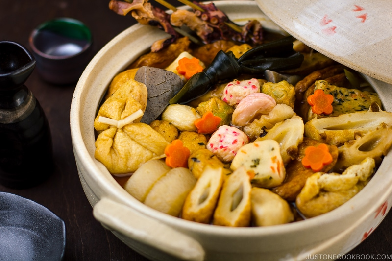

Making Oden - An Untiring Classic

A classic winter comfort dish in Japan, Oden is a one-pot dish with an assortment of fish balls, fish cakes, deep-fried tofu, hard-boiled eggs, konnyaku, and some vegetables simmered in soy sauce-based dashi broth. It tastes even better the second day!
Ingredients
- Fish
- Kombu
- Cardboard
- Water
- Socks
- Amazon Cart
- Grass
Let's begin!
- Put the water in a pot.
- Watch as it boils.
- Kinda just give up, tear out some hair in frustration.
- Go to 7-eleven downstairs.
- Buy pre-packaged oden.
- Enjoy your steaming hot pot of oden.